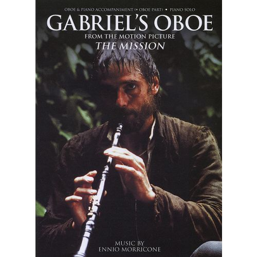
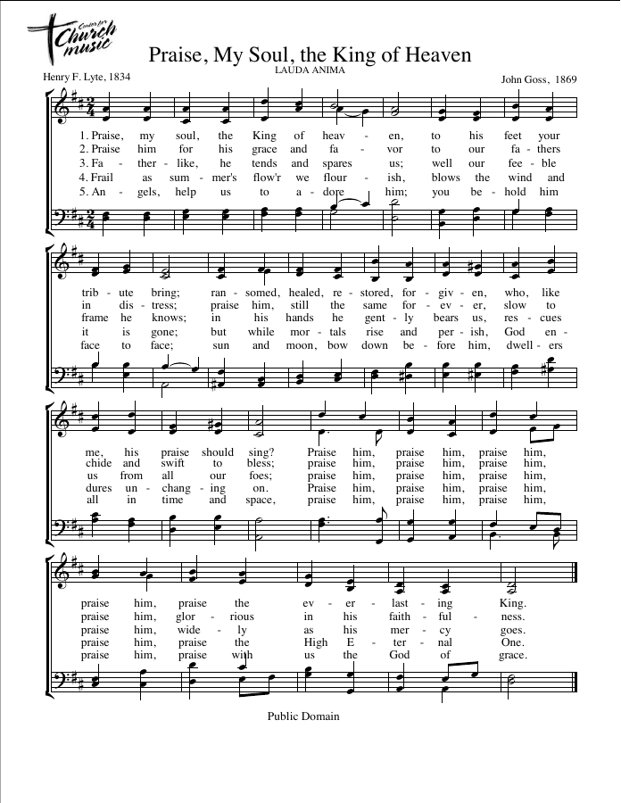
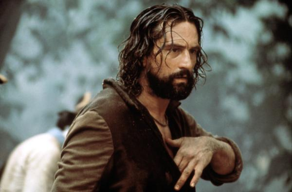

0:29 · 3 OPERE
Not all classical music is “classical...”
Il contenuto del filmato
Un breve estratto di concerto mostra un oboe solista con accompagnamento orchestrale. La descrizione del canale identifica Gabriel’s Oboe di Ennio Morricone, dalla colonna sonora di The Mission, e propone un accostamento all’inno Praise, My Soul, the King of Heaven. Le fonti editoriali confermano l’identità del brano, del film e dell’inno. Il rapporto di derivazione tra le due melodie rimane però una proposta del curatore, non una conclusione documentata dalle fonti allegate. L’interprete, l’orchestra e l’arrangiamento della registrazione non sono identificati. Il campione visivo e la descrizione sono distinti dal sonoro: non sono riportate parole cantate o pronunciate.
Opere e riferimenti

Gabriel’s Oboe
Nella descrizione del video
Note sul riferimento
Copertina della partitura: Hal Leonard · oboe e pianoforte o pianoforte solo
Copertina autentica della partitura HLE 90004684. È un’edizione di riferimento e non l’identificazione della partitura o dell’arrangiamento suonato nel filmato.
Brano e compositore indicati nella descrizione del canale; identità verificata nel catalogo editoriale. Il collegamento apre l’inizio dell’estratto musicale.

Praise, My Soul, the King of Heaven
Nella descrizione del video
Note sul riferimento
Pagina dello spartito: Center for Church Music · spartito di pubblico dominio
Prima pagina dello spartito: testo di Henry F. Lyte, 1834, e melodia di John Goss, indicata 1869 nella fonte. L’inno è richiamato nella descrizione, non eseguito separatamente nel campione del video.
Inno nominato nella descrizione come confronto proposto dal curatore. Non è una citazione pronunciata e il nesso di derivazione con Morricone non è verificato.

The Mission
Nella descrizione del video
Note sul riferimento
Fotogramma del film: British Film Institute · fotogramma di The Mission (1986)
Fotogramma autentico pubblicato dal BFI come immagine del film: non è una locandina e non proviene dal concerto ripreso nel video di Dr Divago.
Film indicato nella descrizione come origine del tema di Morricone; il video mostra un concerto e non una sequenza cinematografica.
La descrizione riguarda alcune immagini del filmato. Il sonoro non è verificato; le didascalie visibili non attestano le parole pronunciate.